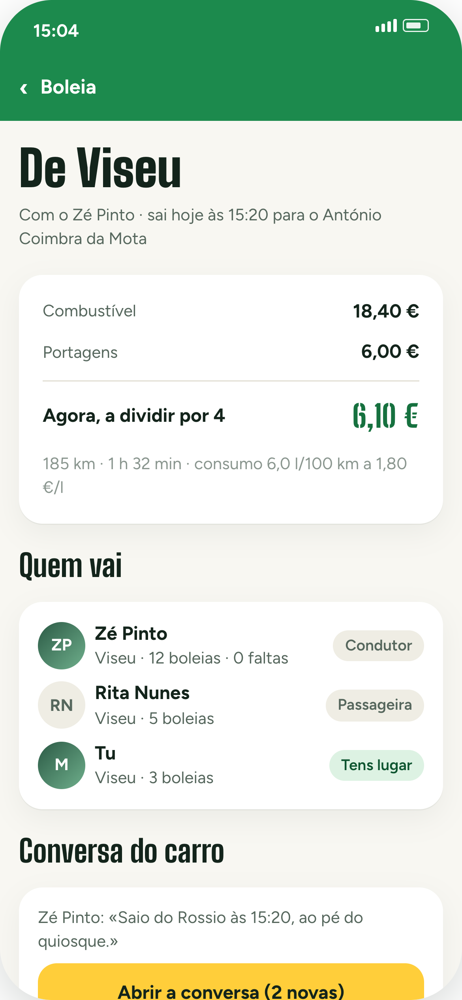
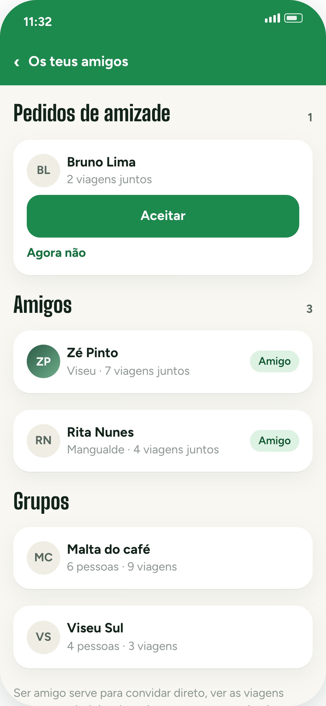

Boleias
«Alguém vai de carro?»
Agora tem resposta.
E o preço não sai do achómetro: sai do consumo, do combustível e das portagens do caminho.
Custo a sério
6,10 € por pessoa. Baixa sozinho quando entra mais gente.
Tens carro?
Publicas a tua boleia em dois toques.

o dia inteiro, não só os 90 minutos
Contas da viagem
«Depois acertamos.»
A frase mais cara
do futebol.
Passados três dias ninguém sabe quem pagou o jantar. A app sabe.
Quem paga a quem
Duas transferências e está tudo fechado.
Já pago
Quem paga diz que pagou. Quem recebe confirma.
Quem pôs o quê
O que cada um meteu e o que lhe coube. Ao cêntimo.

a app não move dinheiro — só diz quem paga a quem
Antes do jogo
Chegar cedo tem
um único objetivo.
Os tascos à volta do estádio, avaliados por quem lá foi — e o contador de quem já lá está.
Já lá estão 12
Só aparece a partir de 5 pessoas. A tua localização não fica guardada.
Cervejómetro
4,5 em 5, votado por 47 adeptos. Não é opinião de guia.
Petiscos com nome
Bifana a 3,50 €, 28 recomendações. Sabes ao que vais.

1501 sítios à volta dos estádios
Passaporte de estádios
Dizes que já foste
a 30 estádios.
Prova.
O carimbo só se dá lá dentro, no dia do jogo. É a app que confirma.
Sem batota
Fora do estádio não carimba. No dia seguinte, também não.
156 estádios
Dos 57 nacionais ao Camp Nou, Wembley e San Siro.
Ranking público
Quem tem mais estádios na perna aparece na lista.

o passaporte de quem anda na estrada
Dia de jogo
Sair «às três e tal»
é como não sair.
A app diz-te a hora, conta com o trânsito do jogo e com o tempo de encontrar lugar.
15:20
Estrada, estacionamento e a fila da entrada, já contados.
Parques por cor
Verde costuma ter lugar. Vermelho é dar voltas ao quarteirão.
Avisa a horas
Depois das 16:15, à volta do estádio, esquece.

chega a horas, sem dar voltas ao quarteirão
Conversa do carro
Um grupo de
WhatsApp a menos.
A conversa é do carro: condutor e quem já tem lugar. Acaba um dia depois do jogo e não volta a tocar.
Só quem vai
Quem ainda não foi aceite não escreve. O carro não é um grupo aberto.
E cala-se sozinha
Um dia depois do jogo fecha. Fica lá para consulta.

o que se combina, combina-se uma vez
Depois do apito
O jogo acabou.
E agora, quem
é que te leva?
Com o apito, as boleias mudam de cara: mostram quem volta e para onde.
Sem ficar a pé
Pedes lugar na volta e o condutor responde no telemóvel.
Por destino
«Para Viseu», «para Mangualde». Não é uma lista de nomes soltos.
Sobra um lugar?
Abre-o a meio do jogo. Alguém lá fora agradece.

ninguém fica no parque à espera de um milagre
Missões
O jogo dura
90 minutos.
O dia, não.
Missões para cumprir na viagem, e um álbum que no fim da época conta a história toda.
Petisco da terra
Provar o prato da cidade do jogo. Alguém tem de o fazer.
Copo com o rival
Uma foto com um adepto da outra equipa. Sem sangue.
Álbum da época
As fotos ficam. A memória, essa, é que se vai.

O mapa
Tudo o que interessa
à volta do estádio.
Tascos, parques e casas de banho a menos de dez minutos a pé. Em qualquer estádio do país.
Tascos
A verde, com as notas de quem lá foi e quanto se demora a pé.
Parques
Amarelo aperta, vermelho enche. Vês antes de entrar na cidade.
E os WC
A azul. Parece pouco, até ao intervalo.

156 estádios, todos com o seu mapa
Jogos fora do país
Chegaste a Milão.
A malta está onde?
O ponto de encontro que o clube marca, com o caminho a pé até ao estádio.
Sítio e hora
O encontro marcado pelo clube, não um boato do grupo.
Como se vai
Que metro, que saída, e os 22 minutos a pé até ao estádio.
Passo a passo
As indicações até lá, para quem não fala a língua.

o ponto vem do clube; o caminho, de mapas livres
Dormir fora
Da Madeira para
Alvalade também
é jogo fora.
Ilhas e estrangeiro, nos dois sentidos: quem vai e quem vem. A app não vende nada — junta a malta.
A casa toda
O preço total e quantas camas. A conta faz-se como nas boleias.
Até dar
5 de 8 pessoas. Quando fecha, reserva-se fora da app.
Sem inventar
Ninguém promete disponibilidade. Fica o anúncio que alguém viu, com a data.

ilhas, continente e Europa
A
AwayDay
A app do dia de jogo. Do «alguém vai de carro?» até às contas acertadas à noite.
boleiastascoscontaspassaportea volta
O que faz
Seis coisas,
num dia de jogo.
1
Boleias com o custo dividido
Combustível e portagens do caminho, por lugar. Baixa quando entra mais gente.
2
A que horas sair, e onde parar
A hora de saída e os parques por cor, conforme costumam encher.
3
Os tascos à volta do estádio
Avaliados por adeptos, com o contador de quem já lá está.
4
As contas da viagem
Cada despesa por quem entrou nela. No fim, quem paga a quem.
5
O passaporte dos estádios
Carimbas lá dentro, no dia. 156 estádios, de Portugal à Europa.
6
E a volta, depois do apito
Quem volta e para onde — para ninguém ficar no parque.
o dia inteiro, não só os 90 minutos
Para ficar claro
O que a AwayDay
não faz.
Não vende bilhetes nem cobra comissão a ninguém.
Não mexe no teu dinheiro. Diz quem paga a quem; o resto é entre vocês.
Não inventa dados. Se não se sabe uma coisa, a app diz que não sabe.
Não mostra onde tu estás. A localização serve para confirmar um check-in e é deitada fora.
Feita por quem anda na estrada atrás do clube.
Em breve, para toda a gente.
segue para seres dos primeiros
AwayDayDia de jogoLiga Europa
DIA DE JOGO
Benfica v Celtic15 outubro 2026
Luz, 20:00.Carimba o estádio lá dentro. Fica no teu passaporte.
v
AwayDayDia de jogoEstádio da Luz
DIA DE
Jogo
SC Braga vs Gil VicenteLiga BetclicApito · 20:15

Domingo, 19 de outubro.
Quem leva o carro? Combina na AwayDay.
DIA
DE JOGO
vs
Liga dos Campeões
21 outubro 202620:00 · apitoEstádio José Alvalade
PRÓXIMO JOGO

Seg 20 out
20:00Estádio do Dragão. Combina com a malta.
Liga dos
Campeões
#VAMOSÀBOLA
Foto: Zemszo, CC BY-SA 4.0